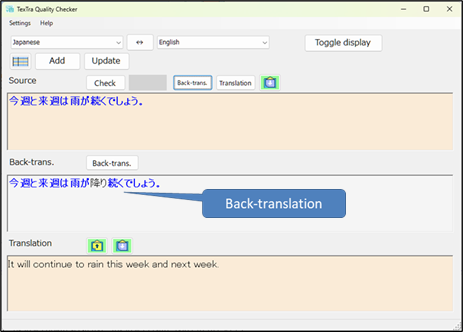
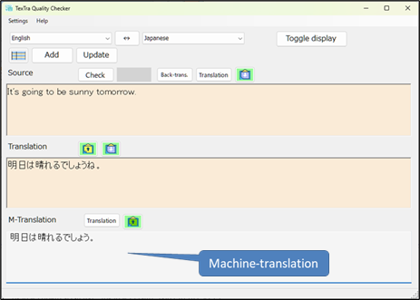
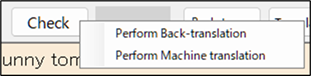

Main form
You can check the accuracy of translations
using “Translation accuracy level” and
“Back-translation.”
Enter the source
text and its translation,
then press the Check
button.
The translation accuracy
level
is
displayed in three
levels:
High, Medium, and Low.

・ Translation accuracy
level
It indicates the accuracy of the translation to the
original text.
Translation accuracy has three
levels:
Light green >
High
Yellow > Medium
Red >
Low
When the translation accuracy level is
low,
you can improve it by revising either the source text
or the translated text.
・ Back
Translation
The translated text is translated again in the
language of the original text.
Please
compare the original text with the back-translation
to
check whether anything is missing
or whether the
translation has unintentionally changed the meaning.
With the Toggle display button, you can toggle the information shown on the
form.
・ Machine-translation
Translate
the translated text again into the language of the original
text.
Compare the original text with
the back-translated text
to check for missing translations
or unintended meanings.

・ Machine-translation
You can compare the
machine translation with your translation.

You can run
back-translation and machine translation at the same time
when checking from the check button’s right-click
menu.
